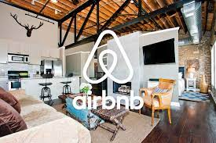

Looking for something fun to do on the MSU Campus?
Kim JacksonMichigan State University can be full of fun activities! You can make your college experience more enjoyable by getting involved in registered student organizations, attending social events, attending networking events, and much more. As an incoming freshman, I was a lot more introverted and didn’t take advantage of the many opportunities that MSU has to offer. I mostly just attended class and hid out in my dorm. With the exception of dining halls and the library I didn't go out much. My social life was pretty nonexistent. Now as a junior, I am more involved on campus. If you are looking to get involved don’t be afraid. Just go for it! A big campus such as MSU can be quite intimidating, but don’t worry. I have gathered up a bunch of suggestions for you. There is something at MSU for everyone. In the list below, I have included activities that can be either done on and off-campus. Most off-campus suggestions are within a 20 - 30-minute driving range in the East Laning and Greater Lansing communities. Some activities are solo and others would probably be more fun with friends. Nonetheless, I hope this list will motivate you to get out and enjoy yourself!
| Activity | Location | Friends or Solo? |
|---|---|---|
| Get involved in Registered student orginizations | On campus | Friends/Solo |
| Attend Career Fairs | On campus | Solo |
| Visit MSU Dairy and taste the ice cream | On campus | Friends/Solo |
| Visit Uncle Johns Cider Mill | Off campus | Friends |
| Attend the many on campus sporting events(volleyball,hockey,etc) | On campus | Friends/Solo |
| Explore Grand River | Off campus | Friends/Solo |

Airbnb Patent
Kim JacksonAirbnb has a patent for a software process that is able to analyze both a person's online and offline social presence to identify any anomalous behavior. This type of identifying can lead to Airbnb users being denied the opportunity to book and rent rooms. The purpose of implementing such software is for safety and protection for Airbnb hosts because obviously, they would want to rent their property to someone who could damage it. This software is also used for people who want to host. Now to take a step back, software many different companies such as banks or credit unions have already implemented some type of technology that does something quite similar. For example, some banks will alert you if they suspect suspicious activity going on with your bank account. This could be something like using your credit in a different state or country that you don't normally use it in. The concept of having software security precautions in place has already been established. However, the processes for during so may greatly vary from company to company. So, in this case, I would have to say that Airbnb's patent should exist if their process is something new. If it is just a variation of another company's process, then perhaps it should be copyright instead. What do you think about this patent? I would love to hear your feedback!
Safe Spaces on the Internet
Kim Jackson"Safe spaces" on the internet are like gold mines for freedom of speech. It can be blogs(such as this one here), comment sections, social media, etc. Essentially safe spaces are where one can vent, rant, make key points freely. This aspect of computing can have either positive or negative impacts because just as easy as it is for someone to dish out their own personal beliefs there is also someone there who can counter those beliefs. I feel that is since freedom of speech allow is so subjective, it can not be divided into positive or negative when it comes to how computing is impacting it. For instance, freedom of speech can only enable discussion about tough topics that need to be addressed. The impact of this can be either positive or negative. For example, a person that is perhaps struggling with some sort of addiction may use safe spaces on the internet to connect with others who are dealing with the same hardships. This sense of community can have great outcomes. On the other hand, freedom of speech in computing can encourage hate, bias, etc. This of course would have many negative implications. Although I have only given one example here, it is clear how freedom of speech has had varying impacts on computing in today’s society.